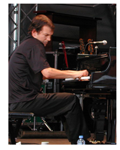

Brad Mehldau is an American jazz pianist. Besides leading his own group, the Brad Mehldau Trio, he has performed with many renowned artists, including Pat Metheny, Wayne Shorter, Joshua Redman, Christian McBride, Michael Brecker, Chris Potter, Kurt Rosenwinkel, John Mayer, Jimmy Cobb, and classical vocalists Renée Fleming and Anne Sofie von Otter.
While a sophomore in high school, he won Berklee College's Best All-Around Musician Award. Mehldau moved to New York in 1988 to study jazz at The New School, studying under Fred Hersch, Junior Mance and Kenny Werner, and also playing with Jimmy Cobb. He went on to play as sideman with a variety of musicians, most importantly with the Joshua Redman quartet, before forming his own trio in 1994, with bassist Larry Grenadier and drummer Jorge Rossy, and later Jeff Ballard, who succeeded Rossy in 2005. In addition to his trio work, Mehldau collaborated with guitarist Pat Metheny, releasing two albums with him and embarking on a worldwide tour along with Grenadier and Ballard.
Recording primarily for Nonesuch Records, Mehldau plays original compositions, jazz standards and jazz arrangements of popular music, especially rock music. With his trio, he has recorded arrangements of the music of Nick Drake, The Beatles, Radiohead and Paul Simon among others, and recorded Soundgarden's "Black Hole Sun" on his 2008 album, Live. Mehldau has also expressed an interest in and knowledge of philosophy, in particular of music and art. He has played and recorded solo and with co-leaders Peter Bernstein, Mark Turner, Charlie Haden, Charles Lloyd, Pat Metheny and others. In 2004, Mehldau toured with Kurt Rosenwinkel and Joshua Redman.
He cites Larry Goldings, Kevin Hays, Peter Bernstein, Mark Turner, Kurt Rosenwinkel, Jesse Davis, David Sánchez and the other members of his own trio as influences. He implements his classical training by often playing a separate melody with each hand in unusual rhythmic meters. For example, he plays his arrangement of Jerome Kern's standard "All the Things You Are" on Art of the Trio, Vol. IV in A major (a half-step up from the original key, A-flat major) played in 7/4 time. On Day Is Done, he also plays Paul Simon's "50 Ways To Leave Your Lover" in 7/4. Another of Mehldau's signature techniques is to create an ostinato in his right hand whilst developing a motivic idea in his left hand.